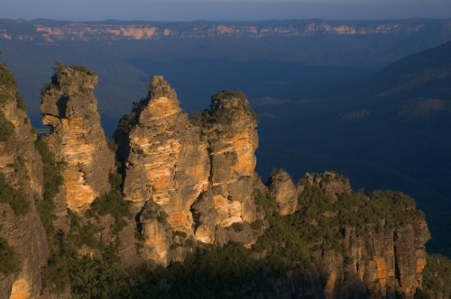
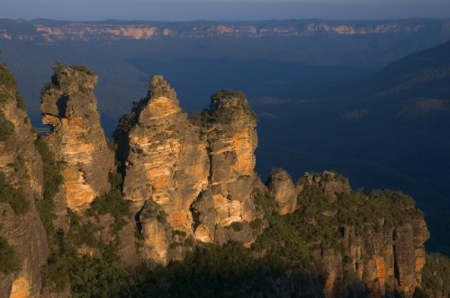

Australia
El país ocupa la principal masa continental de la plataforma llamada Sahul, además de algunas islas en los océanos Pacífico, Índico y Antártico. Los países más cercanos a Australia son Indonesia, Timor Oriental y Papúa Nueva Guinea al norte, las Islas Salomón, Vanuatu y la dependencia francesa de Nueva Caledonia al noreste, y Nueva Zelanda al sureste. Australia es el sexto país más grande del mundo con una superficie de 7 741 220 km². Su capital, Canberra, se encuentra en el Territorio de la Capital Australiana. La población del país (según la estimación para 2020) es de más de 25 millones de habitantes, concentrados principalmente en las grandes ciudades costeras: Sídney, Melbourne, Brisbane, Perth, Adelaida y la capital Canberra.


 
